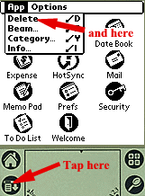
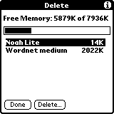

|  |
To check the amount of free memory on your PDA you need to switch to
information screen.
Press the button in the lower, left corner to activate menu (note: the actual
icon can be different depending on the model of PDA you're using). Choose menu item "Delete" to switch to information screen. |
|  |
You can see the amount of free memory in the upper part of the screen.
To install Noah Pro on an external memory card you need (temporarily)
about 5.2 M (5200 kB) of free internal memory. After you install
Noah Pro on an external memory card you can delete it from internal
memory.
You can use this screen to temporarily delete other programs/databases to install Noah Pro. |